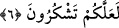

ABDEST – GUSÜL – TEYEMMÜM
6- Ey îman edenler! Namaz kılmaya kalktığınız zaman yüzlerinizi, dirseklere
kadar ellerinizi, başlarınızı meshedip, topuklara kadar ayaklarınızı yıkayın. Eğer
cünüp iseniz, boy abdesti alın. Hasta, yâhut yolcu iseniz, yâhut biriniz tuvaletten
gelmişse, yahut da kadınlara dokunmuşsanız (cinsî birleşme yapmışsanız) ve bu
hallerde su bulamamışsanız temiz toprakla teyemmüm edin de yüzünüzü ve
(dirseklere kadar) ellerinizi onunla meshedin. Allah size güçlük çıkarmak istemez;
fakat sizi tertemiz kılmak ve size (ihsân ettiği) nîmetini tamamlamak ister; umulur
ki şükredersiniz.
“Ey îman edenler! Namaz kılmaya kalktığınız zaman.” Âyette geçen “kıyam”, yani
kalkmak ile namazın rukünlerinden olan kıyam kastedilmişse bu takdirde mânâ;
“namazda kıyama durmak istediğiniz zaman” şeklinde olur. Böylece sebep olanın
(namazın) ismi sebebe (abdeste) verilmiş olur. Yani, namazdaki kıyâmın sıhhati abdest
iledir.
Eğer “kıyâm” ile namaza başlamak için gereken şartları ifa etmek üzere kalkmak
kastedilirse bu takdirde cümlenin mânâsı; “namaz için kalkmayı kastettiğiniz zaman”
demek olur. Bu durumda namazın şartlarından birine diğer bir şartın ismi verilmiş olur.
Çünkü abdest, namazın rukünlerinden “kıyâm” için gereklidir, namaza kalkmak
mânâsındaki “kıyâm” için değil.
Âyetteki hitap, abdestsiz olanlaradır. Namaz için kalkan herkese abdest almak şart
değildir. Çünkü âyetin zahirî mânâsından anlaşıldığı üzere abdesti olanın tekrar abdest
alması şart değildir.
“Yüzlerinizi” yıkayın. “
” yani yıkamak, o mahalle yeteri kadar su temas
ettirmektir. Yıkamanın ovarak veya ovmadan yapılması müsavîdir.
“
” yani yüz, insanın bir şeye yöneldiğinde görünen yeridir. Yüz, uzunlamasına
alnın üstündeki saç bitiminden çenenin altına, enine de bir kulak memesinden diğerine